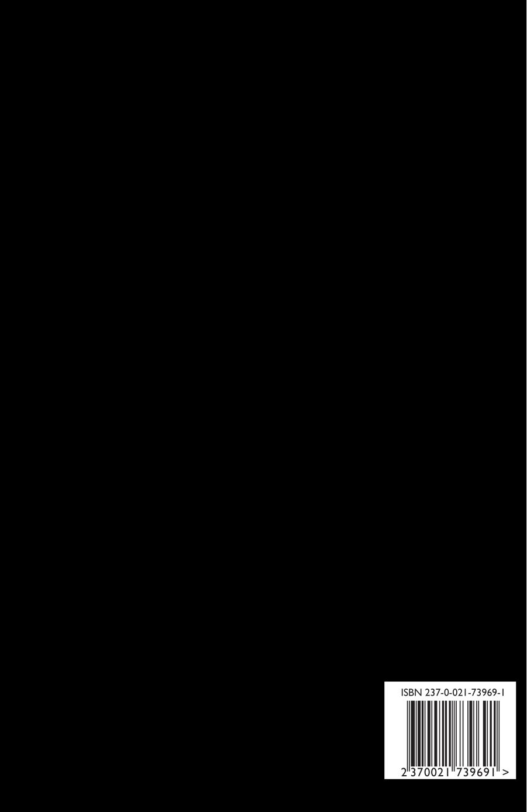

Les Fleurs du Mal (English)
Charles Baudelaire, tr. Patrick Swickard
6"x9" paperback, 260 pages
The falling leaves drift by the window
The autumn leaves of red and gold
I see your lips, the summer kisses
The sun-burned hands I used to hold
Since you went away the days grow long
And soon I'll hear old winter's song
But I miss you most of all my darling
When autumn leaves start to fall
- Johnny Mercer
A new translation of this classic by Baltimore based poet Patrick Swickard. This version features only the English versions of the poems. For bilingual readers, a multilingual copy is also available. Or this English only version can be paired with the previously-mentioned French-only version—the pages the poems are on should match up in both versions.